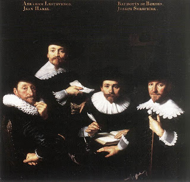

Bava Batra 175 - Loans and Liens
One who loans money to his fellow and records the loan in a document signed by witnesses may collect even from encumbered properties. The existence of the document, together with the witnesses, make the loan public knowledge. Thus, potential buyers can investigate and find out about the lien created by this loan. Therefore, they accept the risk. Should the borrower later default on the loan, the lender can collect the land from these buyers. Even if the document does not mention the lien, it is assumed to be the omission made by the scribe, and the lien is still presumed.
However, if the loan is taken out before the witnesses but not recorded in a document, the creditor can collect only from unencumbered properties, that is, fields that are still in the borrower's possession.
If the lender produces against the borrower a note written in the borrower's own hand, the lender still collects only from the unencumbered properties.
Art: BARTHOLOMEUS VAN DER HELST - Regebts of the Wallon Orphanage